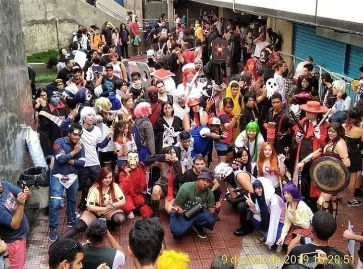
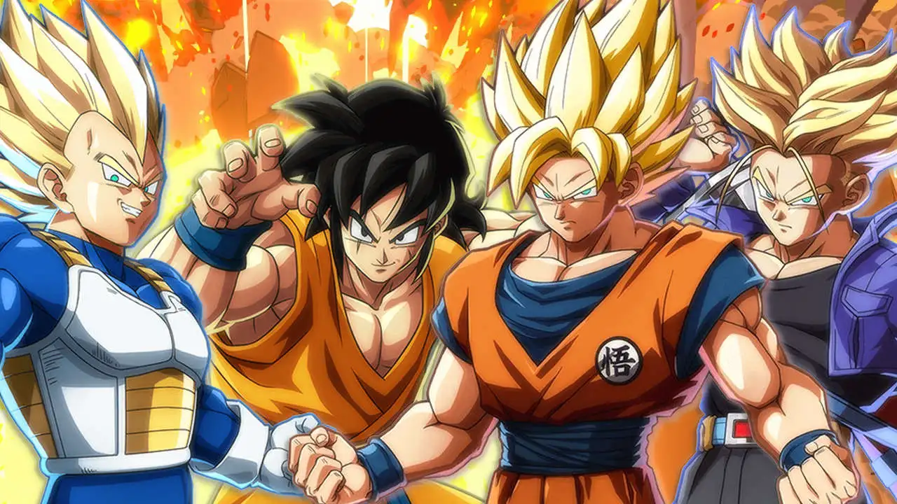

7 maio @ 11:00 pm - 7:00 pm.
27º Pira Anime Fest
Dom Bosco Cidade Alta R. Alfredo Guedes, 1199 - Cidade Alta, Piracicaba, São Paulo, Brasil. Vem aí o maior evento Geek do interior paulista! São dezenas de convidados e diversas atrações em Quadrinhos, Games, Internet, Cosplay, Dublagem, Cinema, e muita cultura Pop! O evento contará com concursos de cosplay, kpop e karaokê, terá Arena Games com diversos jogos, as Atrações Temáticas, a Área Artists Alley com artistas independentes, o Espaço […] livre

20 maio @ 1:00 pm - 6:00 pm<
Encontro Cosplay Itaim Bibi
Koa Food Market Itaim R. Joaquim Floriano, 845 - Itaim Bibi, São Paulo, São Paulo, Brasil Anote ai na sua agenda (Sábado dia 20 de maio) acontecerá o terceiro Encontro Cosplay do Itaim Bibi no @koa_itaim o point oriental mais Geek de São Paulo que fica na Rua Joaquim Floriano, 845 atrás do prédio do Google em São Paulo, será a partir das 10h até 19h teremos Just Dance e Mortal Livre

27 maio @ 12:00 pm - 6:00 pm